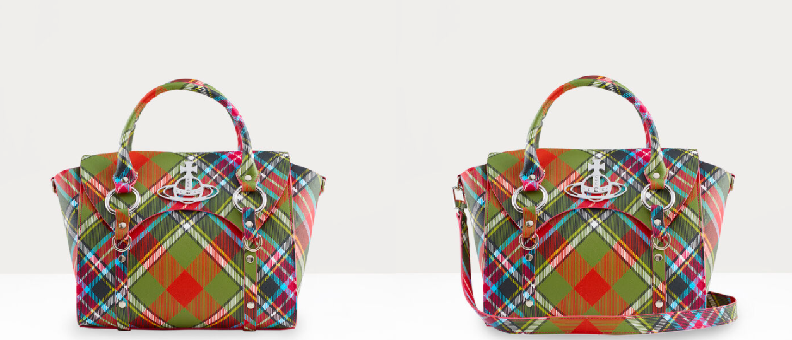
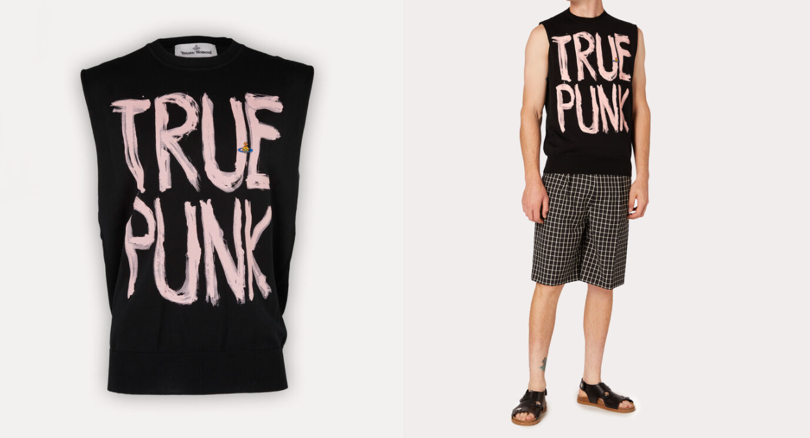

|
Vivienne Westwood.My Opinions on VW Products.
|
|
|
Vivienne Westwood.My Opinions on VW Products.
|
| Product Name. | Description. | Price. |
|---|---|---|
Pirate Boots Tan. Source! |
First seen in the iconic 1981 Pirate Collection, the Pirate Boots are nowadays a classic Westwood style. Made from tan leather, fasten the leather buckle straps to your preferred fit.
Please note that the soles are 100% leather and may need to be resoled for extra durability. - The Reason why I chose these as one of my least favorite items is because I just personally would never wear them. They accesive straps remind me of old school straight jackets and the vomit brown color just really isn't my thing. |
$835 |
| Betty Medium Handbag Bruce Of Kinnaird.  Source! |
In line with Vivienne Wesrwood's punk aesthetic, the faux leather Betty Medium Handbag is patterned in this season’s Bruce Of Kinnaird multicolour tartan print and decorated with polished rings and studs across the exterior. Complete with a detachable strap, it can styled as a crossbody bag. - The Reason I chose this handbag as one of my least favorite items because I really hate the colors, a lot of people can make multicolors look good on their products but the plaid with the rainbow colors is very turn off-ish, plus the piece itself is extremely expensive. |
$715 |
| Punk Top Black.  Source! |
In black, the cotton-crafted unisex Punk Top features Vivienne Westwood's 'True Punk' slogan in bold lettering, which sees freedom fighters, activists, art lovers, and readers as today's true punks. Slip yours on over a shirt or top for the perfect layered look. - The Reason why I chose this top as one of my least favorite pieces is because I feel as if It needs a lot more work in the creativity department. I understand what it takes to make these and the cost of materials as well but I feel as if this shirt, that looks like something you could buy at hot topic for 30$, and it being 10x that price is ridiculous considering that you can't even see the Vivienne Westwood logo clearly, someone could easily D.I.Y this at home. |
$300 |